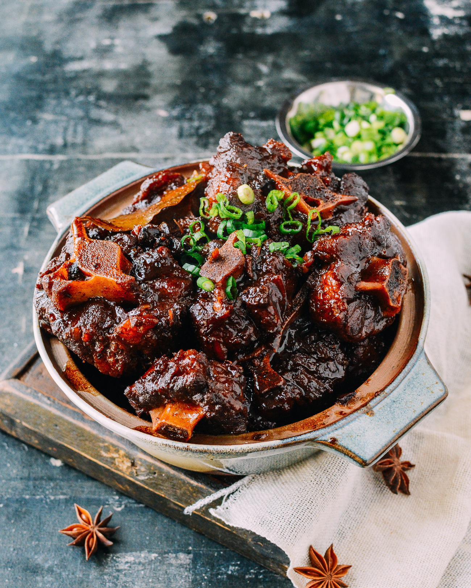

Ox-Tail

Description
Ever since I could remember my mom would beat me senseless if I chose not
to eat. Thats why I'm fat, no other reason. I remember not liking eating
food, I would tell her, "no mom, this will make me fat." She didn't
listen. Anyways heres my moms famous Jamaican Oxtail recipe. Hope you
enjoy!!!
Ingredients
- 5 lbs oxtails
- 2lbs all-purpose flour
- 1 tbsp olive oil
- 1 habanero pepper
- 1 medium onion diced
- 2 celery stalks diced
- 3 garlic cloves
- 1 medium carrot
- 2 celery stalks
- 1 red bell pepper
- 3 bay leaves
- 1 tbsp kosher salt
- 1 tbsp black pepper
- 1 tbsp allspice
- 1 1/2 cup red wine
- 3 cups Jerk BBQ Sauce
- 1 cup beef broth
- 3 fresh thyme sprigs
Steps
- In a large Dutch oven or heavy pot, heat the oil and butter over medium heat until hot.
- Add the oxtail pieces to the pot and brown them on all sides. Remove the oxtail and set aside.
- Add the onions, garlic, and scallions to the pot and sauté for 2-3 minutes, until the onions are translucent.
- Add the thyme, salt, black pepper, and Jamaican curry powder to the pot and stir to combine. Cook for 1-2 minutes, until fragrant.
- Add the tomato paste, beef broth, red wine, and Worcestershire sauce to the pot and stir to combine.
- Return the oxtail to the pot and stir to coat with the sauce. Add the potatoes, carrots, and scotch bonnet pepper (if using).
- Bring the mixture to a boil, then reduce the heat to low and simmer for 2-3 hours, or until the oxtail is tender and falls off the bone.
- Serve the oxtail hot with rice and peas or another side dish of your choice.